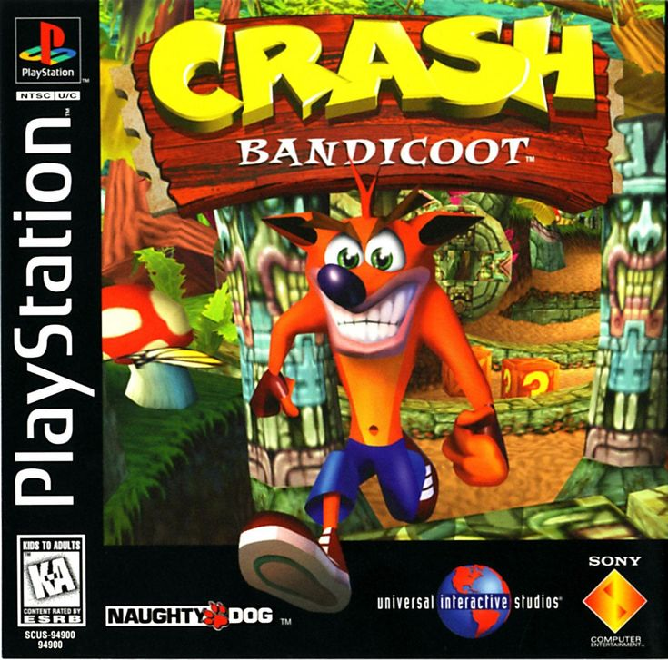
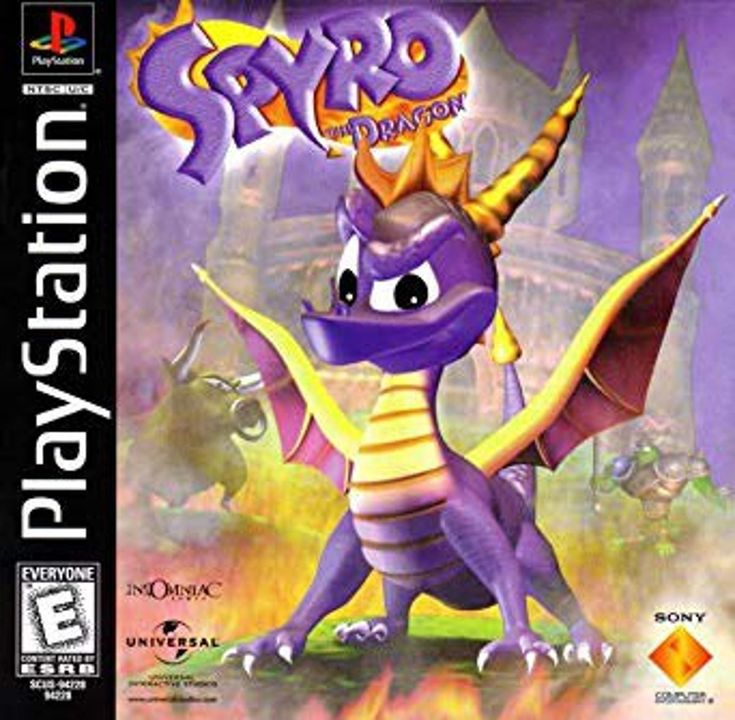
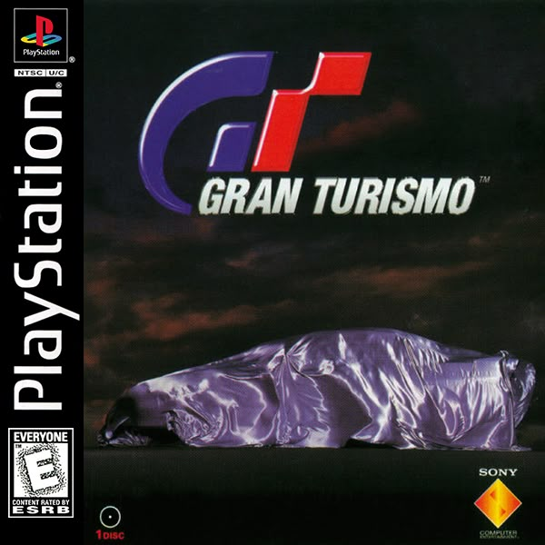
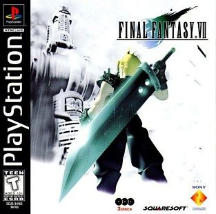
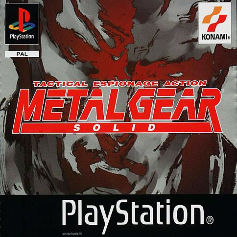

PlayStation, Den originale klassiker, hvor det hele begyndte
Træd tilbage til 90'ernes storhedstid med den originale Sony PlayStation, konsollen der ændrede spilverdenen for altid. Udgivet i 1994 i Japan og 1995 i Europa, blev PS1 hurtigt et ikon for en ny æra af gaming hvor 3D-grafik, CD-drev og banebrydende spiloplevelser tog verden med storm. Med sit karakteristiske grå design, sin simple controller og det uforglemmelige PlayStation-opstartssound, er PS1 i dag mere end blot en spillekonsol det er et stykke spil-historie.
Med over 100 millioner solgte enheder er den originale PlayStation en af de mest succesfulde konsoller nogensinde og starten på Sonys dominans i spilindustrien. Hos Konsolklassikere får du en fuldt testet, rengjort og funktionel PlayStation (PS1), klar til at levere nostalgi direkte til dit fjernsyn. Uanset om du vil samle, udstille eller genopleve barndommens klassikere, er dette den ægte vare der hvor PlayStation-eventyret begyndte.

De største ps1 spil nogensinde
- Crash Bandicoot
- 
- Spyro the Dragon
- 
- Gran Turismo
- 
- Final Fantasy VII
- 
- Metal Gear Solid
- 